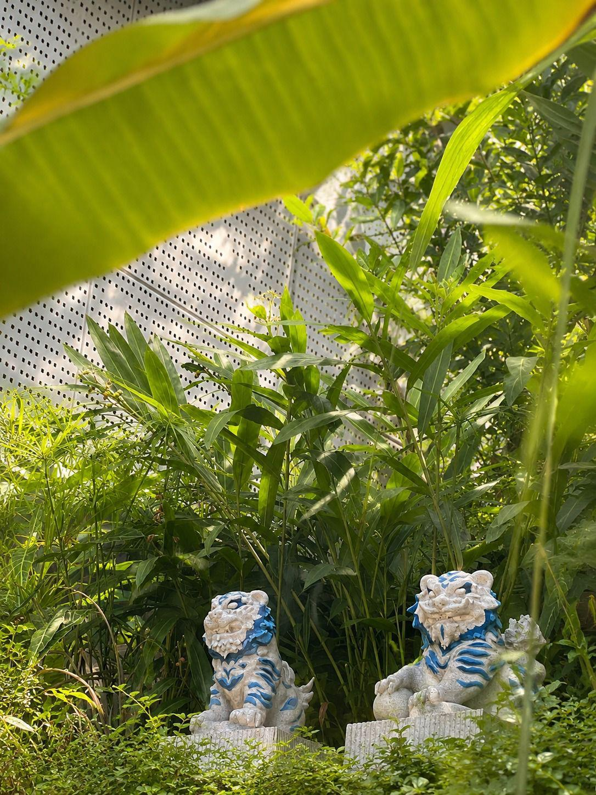
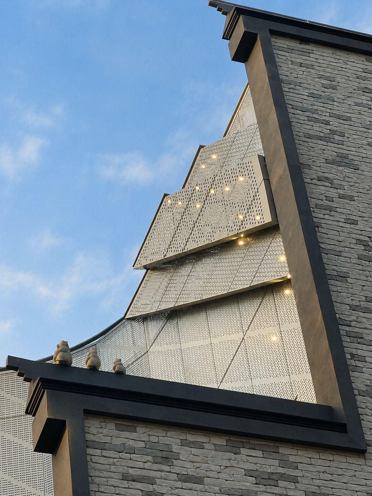
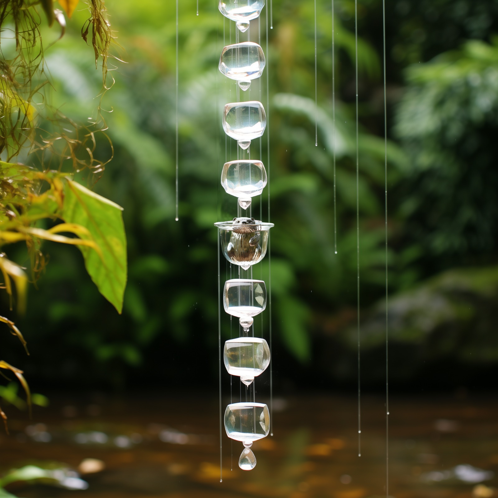

Dabu Hakka
Char Yong (Dabu) Association
Location: Singapore
Completed: 2021
Category: Institution
Collaborator: WeCreate Studio x Prose Architects

For Dabu Hakka, culture is understood as something grown from land, migration, memory, and present-day localization. Landscape becomes the second half of the story: not only inheriting familiar symbols, but using contemporary objects, materials, and encounters to make Hakka culture legible for a future generation.
Culture From The Land
Dabu Hakka, Singapore
The project asks how a cross-generational civic centre can be grounded in Singapore Hakka culture while remaining open to an inclusive contemporary society. The inherited culture forms half of the story; the other half is progression, localization, and the future of Singapore Hakka people.
Instead of repeating traditional methods unchanged, the landscape uses current techniques to close the distance between past and present. As the presentation says, we are the history of our future.





